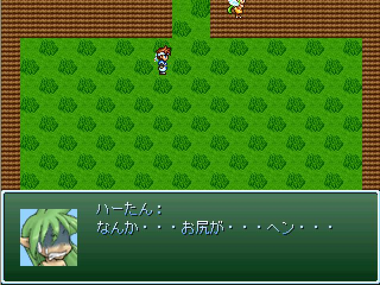

| No,089 【もしもハーたんのお尻にフリスク以外のものが入ったら】 |
| ダウンロード（202KB） |
 |
| 【ＨＮ】 メルシュ 【コメント】 エターなることを繰り返して完成した異色の作品。 無駄にマルチエンディングという豪華仕様。 23・24で完成させようと思ったのに風邪引いて手抜きしてごめんなさい… スクショとかよく分からなくてごめんなさい… タイトルあまり関係なくてごめんなさい… 隠し要素入れられなくてごめんなさい… VIPPERじゃなくてごめんなさい… |
| 【管理人コメント】 久々にハーたん見たぜ フリスクの次に何に目覚めるというのか・・ぼくにはそうぞうもつかない |